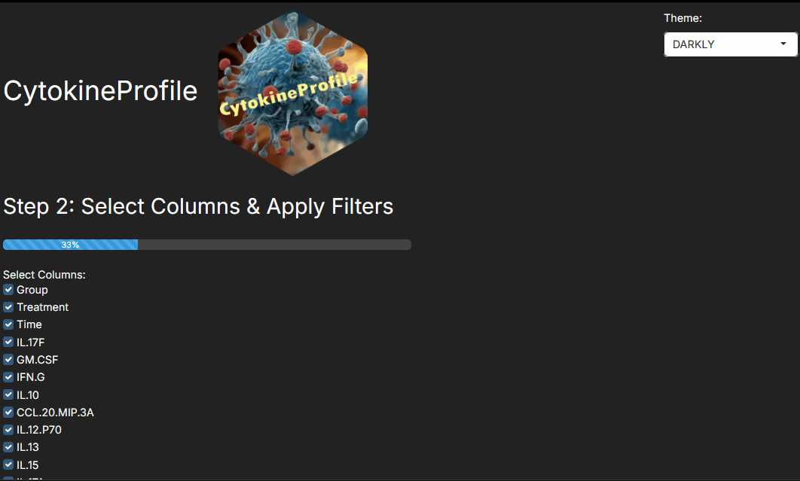

Basic Tutorial of CytokineProfile Shiny
Source:vignettes/Basic-Tutorial-of-CytokineProfile-Shiny.Rmd
Basic-Tutorial-of-CytokineProfile-Shiny.RmdThis guide will provide the basic steps to use CytokineProfile Shiny.
Uploading and Viewing Data
The app allows users to upload their own data and supports various formats such as CSV, XLS/X, and TXT. There is also built-in datasets for testing and understanding the app. Additionally, the app offers the option to view the data set and also view summary statistics which may provide useful information about the data prior to conducting analysis.

Selecting Columns and Applying Filters
In step 2 of the app, the user is provided with a list of columns available within the uploaded data to select or deselect variables of choice and also filter categorical variables.
